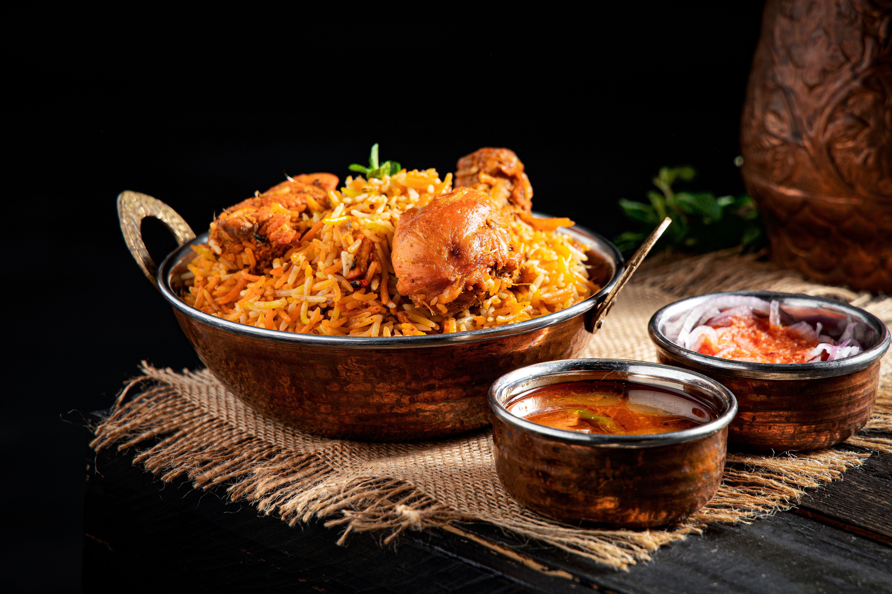

Home
Biryani

Description
Biryani is one of the most popular dishes in south Asia. It is made with fragrant rice, chicken, spices and herbs, creating a rich and delicious flavour
This recipe is simple to prepare and perfect for family dinners or special occasions. It is loved for its aroma and spicy taste.
Ingredients
- 2 cups basmati rice
- 500g chicken
- 1 cup yogurt
- 2 onions
- Biryani Masala
- Salt
- Oil
Steps
- Wash and soak the rice.
- Marinate the chicken with yogurt and spices.
- Cook the chicken until tender.
- Boil the rice until half cooked.
- Layer the rice and chicken together.
- Cook on low heat for 20 minutes.
- Serve hot and enjoy.